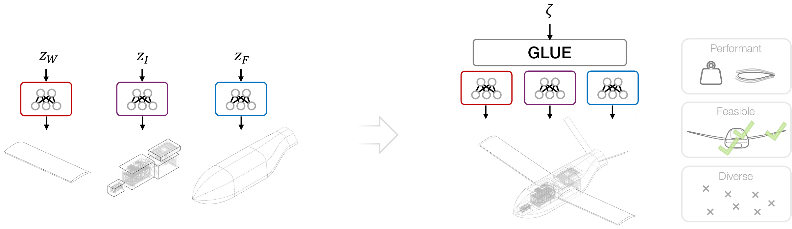

GLUE: Coordinating Pre-Trained Generative Models for System-Level Design
ETH Zurich

Abstract
Engineering complex systems (aircraft, buildings, vehicles) requires coordinating geometric and performance couplings across subsystems. As generative models proliferate for specialized domains, a key research gap is how to coordinate frozen, pre-trained submodels to generate full-system designs that are feasible, diverse, and high-performing. We introduce GLUE, which orchestrates pre-trained, frozen generators while enforcing system-level feasibility, optimality, and diversity. Compatible models must be end-to-end differentiable with a smooth, well-behaved latent-to-output mapping. We propose and benchmark (i) data-driven GLUE models trained on pre-generated system-level designs and (ii) a data-free GLUE model trained on a differentiable geometry layer. On a UAV design problem with five coupling constraints, we find that data-driven approaches yield diverse, high-performing designs but require large datasets to satisfy constraints reliably. The data-free approach is competitive with Bayesian optimization and gradient-based optimization in performance and feasibility while training a full generative model in only ~10 min on an RTX 4090 GPU, requiring more than two orders of magnitude fewer geometry evaluations and FLOPs than the data-driven method. We identify equality constraint satisfaction as a key difficulty and remaining limitation, and ablate approaches that improve this for the data-free approach. As a first step toward scaling generative design to complex, real-world engineering systems, this work explores how unmodified, domain-informed submodels can be integrated into a modular generative workflow, provided the submodels and the system-level evaluation pipeline are differentiable.
Cite
Aebersold, T., Massoudi, S., and Fuge, M. D. (2025). GLUE: Coordinating Pre-Trained Generative Models for System-Level Design. arXiv:2512.19469.